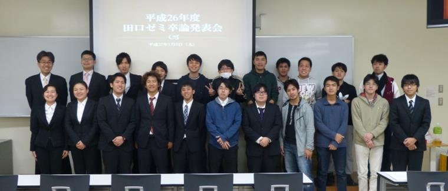
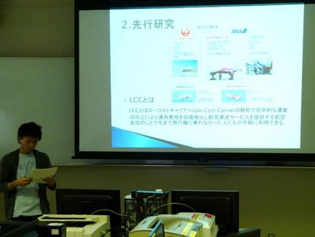

田口ゼミ
田口 順等（たぐち のぶひと）准教授
専門分野／経済統計学・観光経済学
担当科目／データ解析論Ⅰ・Ⅱ、産業連関論など
ゼミのテーマ「観光産業・経済の数量分析」
沖縄の主力産業の一つである観光産業や経済に与える影響について、統計・データを交えて分析し解決方法を提案します。
平成26年度卒業生のテーマ
・「沖縄観光産業及び中国人観光客」「カジノが沖縄の経済に与える影響」「格安航空会社について」など
（写真）平成26年度卒論発表会より
現4年生の卒論テーマ
・「沖縄の観光と経済」「テーマパーク産業」「旅行業」など
ゼミを受講し卒論を書いて何の役に立つの？
①業界分析と就職活動の準備
知識を蓄えて面接に臨むことで、「アルバイトしていました」以外の強力なアピールができます。業界分析をすることで将来の職業、キャリアが明確になります。
②考える能力と考え方を身につける
考え方や伝え方には「型」があります。まずは「型」を身につけて仕事や人生に役立ててください。
③こつこつ頑張ること
卒論は一気にかくものではなく、段階的に進めるものです。計画を立てて、時間を管理し目的を達成することとその体験は大きな人生の武器になります。
ゼミ生からの紹介 : 宮城 博斗 君（4年生）
田口ゼミでは情報と産業・経済について今までの4年間で学んだデータ分析、産業連関分析など基礎的なことを活用し、これまでの集大成として卒業論文の作成に励んでいます。基本的にテーマ設定は自由で自分が興味を持っていることについて研究しています。
私は卒業論文として「沖縄の観光について」をテーマに設定し、観光に関係する様々な論文の調査と収集した統計やデータを分析しそれらを組み合わせて沖縄観光の特徴や問題、課題点を見つけ出し今後、沖縄県は観光についてどのような取り組みをするべきか、これから沖縄県の観光はどうなっていくのかについて研究しています。
田口先生は就職活動や卒業論文などについて相談すると親身になってアドバイスを下さるとても良い先生です。田口ゼミではゼミ生の一人ひとりが主体性を持って積極的に自分の好きなことについて学んでいます。自分が興味を持っていることについて深く研究したいと思っている人にはオススメできるゼミです。
ゼミ生からの紹介 : 山口 賢優 君（平成26年度卒業生）
 田口ゼミでは統計やデータをつかって経済や産業についてわかりやすく理解するために相関係数、クロス集計表といったデータ分析について学び、それらを用いて卒業研究を行っています。
私は、近年注目されているLCC（格安航空会社）を卒業論文のテーマにして研究を行っています。日本にLCCが登場した背景や過去の制度、LCCの先駆けとなった航空会社について調べ、さらに今までの利用率や利用者のアンケートデータなどを基に利点や問題点を整理し、今後LCC利用者が増えるためにどうすれば良いのかを分析・研究しています。
私の卒論研究を進めるにあたって論文の書き方やデータ分析の手法がたいへん役に立っています。また先生との面談で卒業論文のまとめ方などをアドバイスしてもらっています。卒業論文は自分の好きなことについて研究できるのでとても良いゼミだと思います。